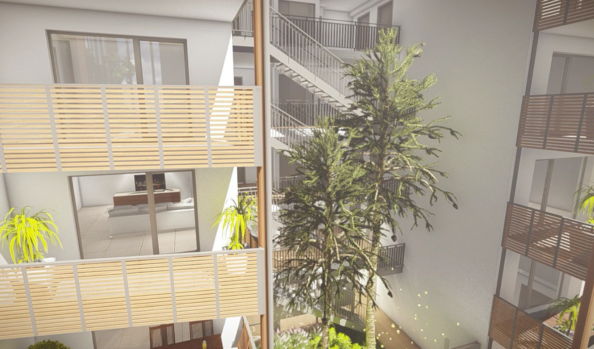
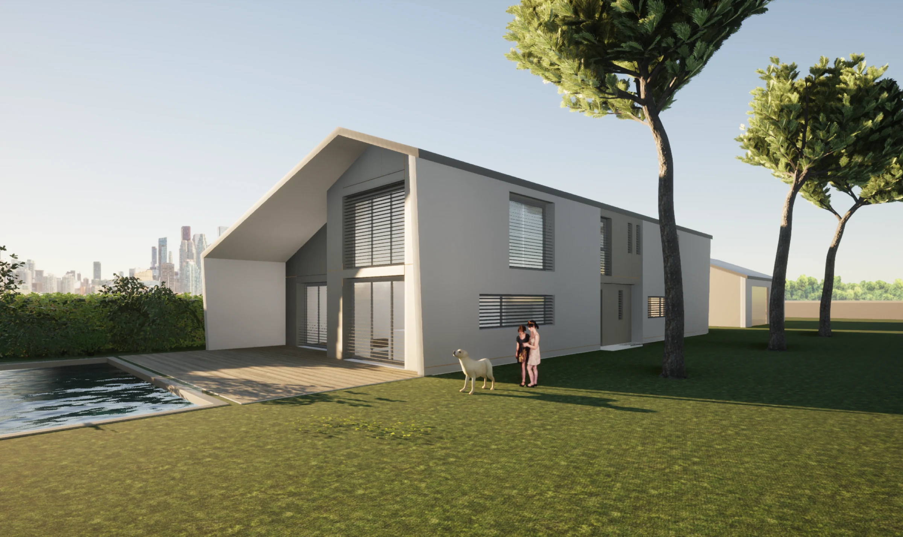
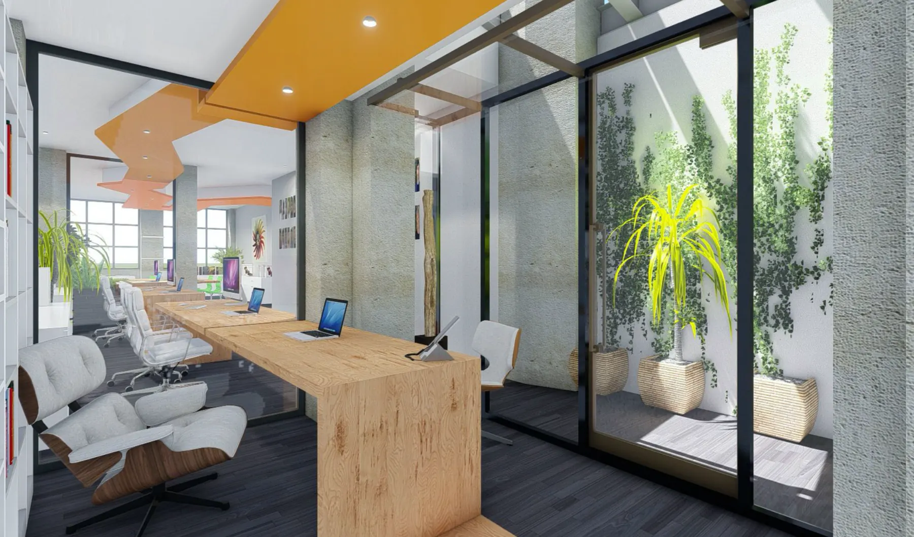
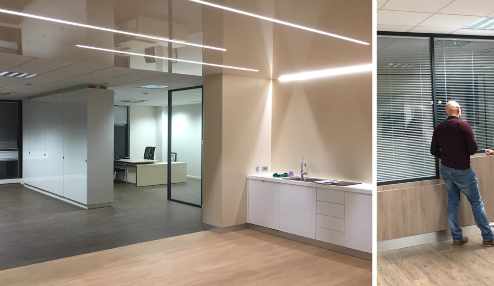
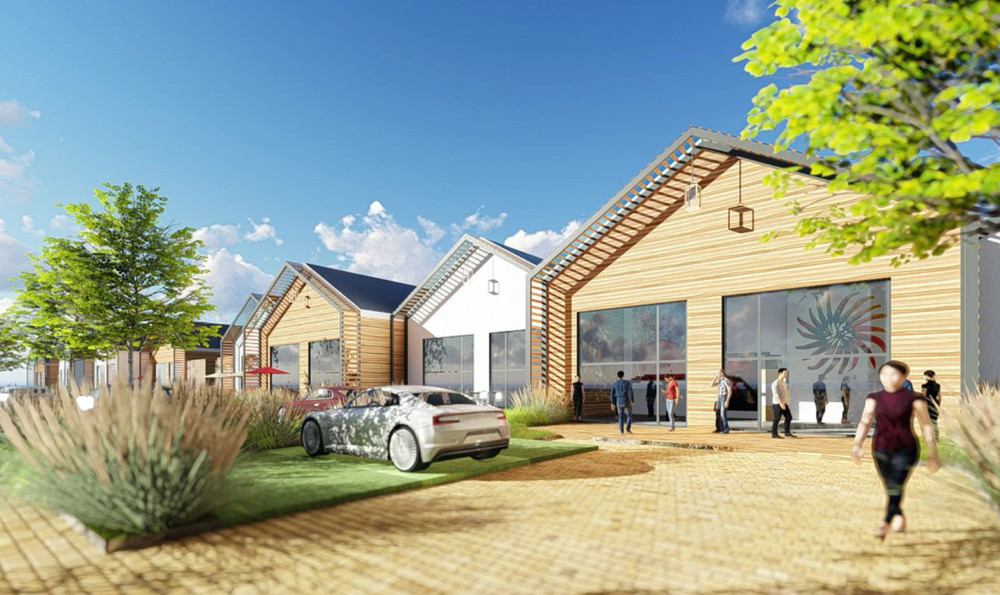

De la tour radarau potager.
Réalisations, chantiers en cours et études, de 2012 à aujourd’hui.
Tiny House Urbaine — Vaulx-en-VelinDéfilerFiltrer par type
 01Livraison début 2025
01Livraison début 2025grünboX-Vienne
Réhabilitation · Vienne (Isère)
 022020
022020Tiny House Urbaine
Habitat · Vaulx-en-Velin (Rhône)
 03Conception 2015
03Conception 2015Logements Caluire
Habitat · Caluire-et-Cuire (Rhône)

042012 – 2016Logements Vienne
Habitat · Vienne (Isère)
 05En cours
05En coursTruite et Basilic
Agriculture urbaine · Lyon
 06Conception 2020
06Conception 2020Résidence intergénérationnelle
Habitat · Décines-Charpieu (Rhône)

072021 – 2025Maison Jarret
Habitat · Décines-Charpieu (Rhône)
 08Conception 2016
08Conception 2016Les Jardins Champblanc
Habitat · Décines-Charpieu (Rhône)
 092016 – en cours
092016 – en coursJudo Club Lyon 6e
Équipement · Lyon 6e
 102015 – 2016
102015 – 2016École Condorcet
Équipement · Meyzieu (Rhône)
 112014
112014Bureaux EPF 74
Bureaux · Allonzier-la-Caille (Haute-Savoie)

122016 – 2017Bureaux Récipro-Cité
Bureaux · Lyon 1er

132019Bureaux Kyodo Yushi
Bureaux · Dardilly (Rhône)
 142013 – 2014
142013 – 2014Tour radar du Moucherotte
Équipement · Saint-Nizier-du-Moucherotte (Vercors)
 152013 – 2014
152013 – 2014Réhabilitation à Saint-Barthélemy-de-Vals
Réhabilitation · Saint-Barthélemy-de-Vals (Drôme)
 16Étude
16ÉtudeVallée de la Gère
Urbanisme · Vienne (Isère)

172016Projet Couzon
Urbanisme · Couzon-au-Mont-d’Or (Rhône)
 18Reportée
18ReportéeLa Roche-sur-Foron
Urbanisme · La Roche-sur-Foron (Haute-Savoie)
 192015 – en cours
192015 – en coursÉco-quartier Vendœuvres
Urbanisme · Vendœuvres (Indre)
Plusieurs projets ne sont illustrés que par des perspectives ou des plans : des photos des bâtiments livrés (avec le nom du photographe) renforceraient la page. La Tour de Babel v2.0 et La Farandole pourront être ajoutées dès que leurs textes et images seront fournis.